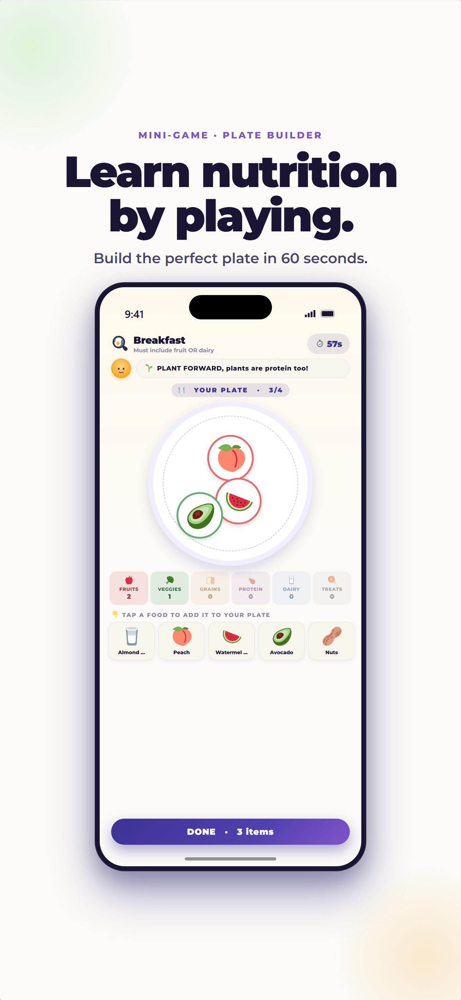

ProudMe Learn uses a discover → play → real-life action loop. Plate Builder and Sleepy Pebble make ideas concrete, while parents help connect the activity to one low-pressure choice outside the app.
Ask a nine-year-old to “make healthier choices” and you may get a shrug. Ask them to build the most colorful plate they can in 60 seconds, and suddenly there is something to try, notice, and talk about. That difference is the idea behind ProudMe Learn.
Learn brings short wellness explanations and educational games into one place. It does not ask kids to memorize a list of rules. It gives them a chance to make choices, see feedback, and carry one useful idea into the rest of the day.
Why start with play?
Most adults have had the experience of knowing what they “should” do and still not doing it. Children face the same gap between information and action, except the language around wellness can be even more abstract. “Eat a balanced meal” and “practice good sleep hygiene” are accurate phrases, but they do not automatically tell a child what to do next.
Play makes the next step concrete. A child can sort a food, choose between two bedtime habits, or try again after a mistake. The feedback is immediate and low-stakes. Nobody has to turn dinner or bedtime into a test.
Instead of “You need to eat better,” try “What did Plate Builder show you about adding color?” The second question invites your child to explain an idea in their own words.
Learning through play also creates a natural opening for conversation. The game does not need to carry the whole lesson. It can simply give a parent and child a shared example to point to later.
What kids find inside ProudMe Learn
Learn is the home for ProudMe's guided wellness content and educational games. The collection is designed to grow, but every experience follows the same principles: short sessions, clear language, age-friendly feedback, and a useful connection to everyday life.
Plate Builder: nutrition becomes something kids can see
In Plate Builder, children choose foods and build a meal under a friendly time limit. The goal is not to label individual foods as “good” or “bad.” It is to practice variety and notice how different food groups can work together.
The activity reflects the USDA MyPlate approach, which encourages families to offer choices across fruits, vegetables, grains, protein foods, and dairy or fortified soy alternatives. The USDA also recommends involving children in shopping and meal preparation—two easy ways to continue the learning away from the app.
Sleepy Pebble: sleep ideas inside a dream-world game
Sleepy Pebble mixes movement, obstacles, rewards, and short pieces of sleep trivia. Children encounter ideas such as winding down before bed, keeping devices from crowding out sleep, and building a predictable routine.
The American Academy of Pediatrics supports regular sleep routines and recommends turning screens off at least one hour before bedtime. A game cannot create that routine by itself, but it can help a child understand why the family is trying it.
Guided lessons: one idea at a time
Guided Learn activities break larger wellness topics into smaller questions and choices. The aim is understanding, not completion for completion's sake. A useful Learn session should leave a child able to name one thing they noticed or one small action they want to test.
How families can use Learn without turning it into homework
The best follow-up is usually short. You do not need a worksheet, a quiz, or a speech. Try this five-step rhythm:
- Let your child choose. Offer two activities and let them pick. Choice makes the experience feel like theirs.
- Keep the session short. One game or lesson is enough. Stop while curiosity is still alive.
- Ask one open question. “What surprised you?” works better than “What did you learn?” because it does not sound like a test.
- Choose one real-life experiment. Add a color at lunch, take a ten-minute walk, or move the tablet out of the bedroom for one night.
- Notice the attempt. Praise the action—“You remembered our screen basket”—rather than judging the whole day.
Keep the goal smaller than you think
“Fix bedtime” is a project. “Put devices on the charger before pajamas tonight” is an action. Small actions give children a clear finish line and give families something specific to repeat.
A simple seven-day Learn plan
This is not a challenge your family can fail. It is a menu. Skip a day, repeat a favorite, or change the order.
- Day 1: Explore. Let your child choose any Learn activity with no follow-up assignment.
- Day 2: Name one idea. Ask what they remember from yesterday.
- Day 3: Try it in real life. Pick one action that takes ten minutes or less.
- Day 4: Play again. Repeat the same activity and see whether your child makes different choices.
- Day 5: Let your child teach. Ask them to explain one game idea to you or another family member.
- Day 6: Connect the feeling. Ask whether the small action changed their energy, mood, hunger, or bedtime.
- Day 7: Choose what stays. Keep one action for the next week and let the rest go.
What Learn is—and what it is not
Learn is educational. It is not medical care, a personalized nutrition prescription, or a substitute for a pediatrician. Children have different bodies, abilities, sensory needs, cultures, schedules, and family circumstances. The right routine is one that is safe, realistic, and appropriate for the individual child.
It is also not a perfection scoreboard. ProudMe is built around progress: trying, reflecting, and returning after an imperfect day. If a lesson leaves a child feeling anxious or overly focused on numbers, pause and talk with them. Wellness education should support a child, not make them feel watched or graded.
Frequently asked questions about ProudMe Learn
What ages is ProudMe Learn designed for?
ProudMe is designed for children ages 7 to 11. Families should still consider each child's reading level, interests, and individual needs.
Does Learn replace health class or advice from a pediatrician?
No. Learn provides general, age-friendly wellness education. It does not diagnose, treat, or provide individualized medical advice.
Do parents need to sit beside their child?
Not for every activity. A brief check-in afterward can be valuable, especially when a child wants to try an idea in real life.
What if my child gets an answer wrong?
Treat it as useful information, not a failure. Ask what they might try differently and let the activity provide another chance.
Sources and further reading
Try Plate Builder and Sleepy Pebble
Choose one manageable action, notice the attempt, and keep the conversation going. ProudMe supports healthy-habit reflection; it does not provide medical care or guarantee behavior change.
